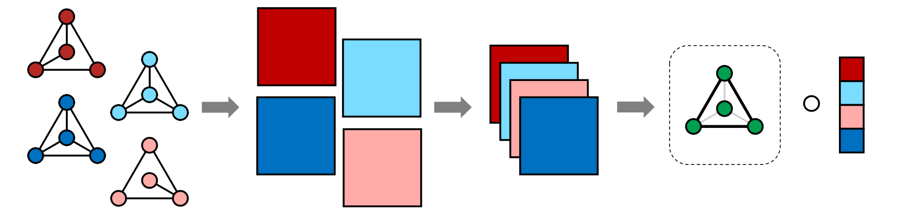
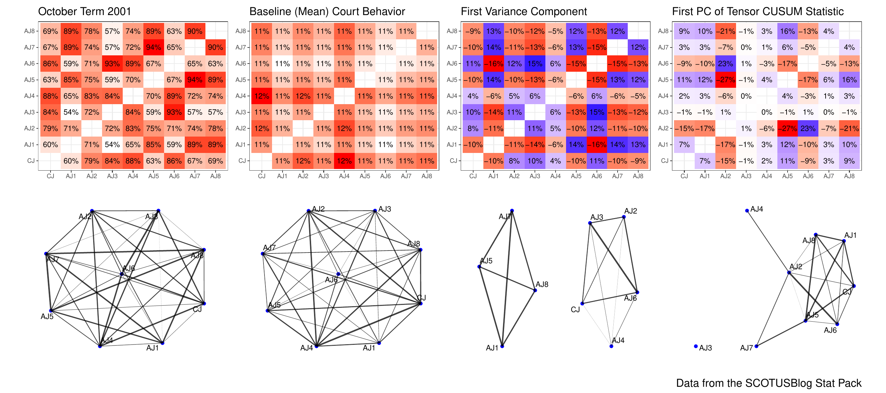

Multivariate Analysis for Multiple Network Data via Semi-Symmetric Tensor PCA
Abstract: Network data are commonly collected in a variety of applications, representing either directly measured or statistically inferred connections between features of interest. In an increasing number of domains, these networks are collected over time, such as interactions between users of a social media platform on different days, or across multiple subjects, such as in multi-subject studies of brain connectivity. When analyzing multiple large networks, dimensionality reduction techniques are often used to embed networks in a more tractable low-dimensional space. To this end, we develop a framework for principal components analysis (PCA) on collections of networks via a specialized tensor decomposition we term Semi-Symmetric Tensor PCA or SS-TPCA. We derive computationally efficient algorithms for computing our proposed SS-TPCA decomposition and establish statistical efficiency of our approach under a standard low-rank signal plus noise model. Remarkably, we show that SS-TPCA achieves the same estimation accuracy as classical matrix PCA, with error proportional to the square root of the number of vertices in the network and not the number of edges as might be expected. Our framework inherits many of the strengths of classical PCA and is suitable for a wide range of unsupervised learning tasks, including identifying principal networks, isolating meaningful changepoints or outlying observations, and for characterizing the “variability network” of the most varying edges. Finally, we demonstrate the effectiveness of our proposal on simulated data and on an example from empirical legal studies. The techniques used to establish our main consistency results are surprisingly straightforward and may find use in a variety of other network analysis problems.
Working Copy: ArXiv 2202.04719
Summary: We develop and approach for performing Principal Components Analysis (PCA) on network series data - sets of networks observed on the same node set. Network series data are observed when a changing network is observed over time (e.g., a social media network at the end of each week) or when a statistical network is estimated from time series data (e.g., stock market correlation networks in different years). We approach this problem by embedding the network series in a semi-symmetric tensor and performing tensor PCA on this representation.

We rigorously analyze Tensor PCA in the semi-symmetric context, proving consistency under an analogue of the “low-rank + noise” model for matrix PCA: somewhat remarkably, despite the difficulty of the tensor setting, our results are within a logarithmic factor of classical PCA results. Our proof technique depends on the classical Davis-Kahan theorem (and some painful algebra) and we hope to apply it further to a variety of tensor decomposition problems. Finally, we apply our method to a variety of synthetic and real data sets and find some counter-intuitive results about the Supreme Court of the United States.

An interesting quick of our analysis is that it allows for differing and possibly adversarial noise at each iteration of the tensor power method. While we don’t explore this fully, this has clear implications for both secure and online variants of our approach.
Presentations: I presented this work at the 2022 Conference on New Advances in Statistics and Data Science (NASDS) and won the 2022 NASDS Best Poster Award. That poster can be found here. Slides from a longer (35-minute) presentation focusing on this work can be found here.